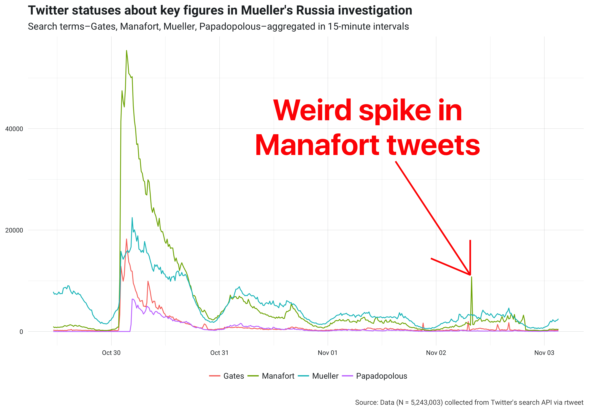
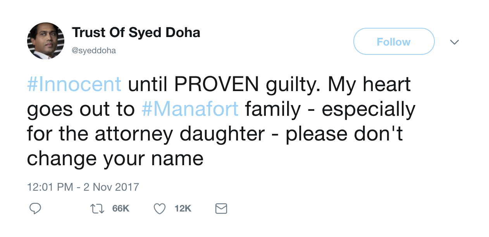
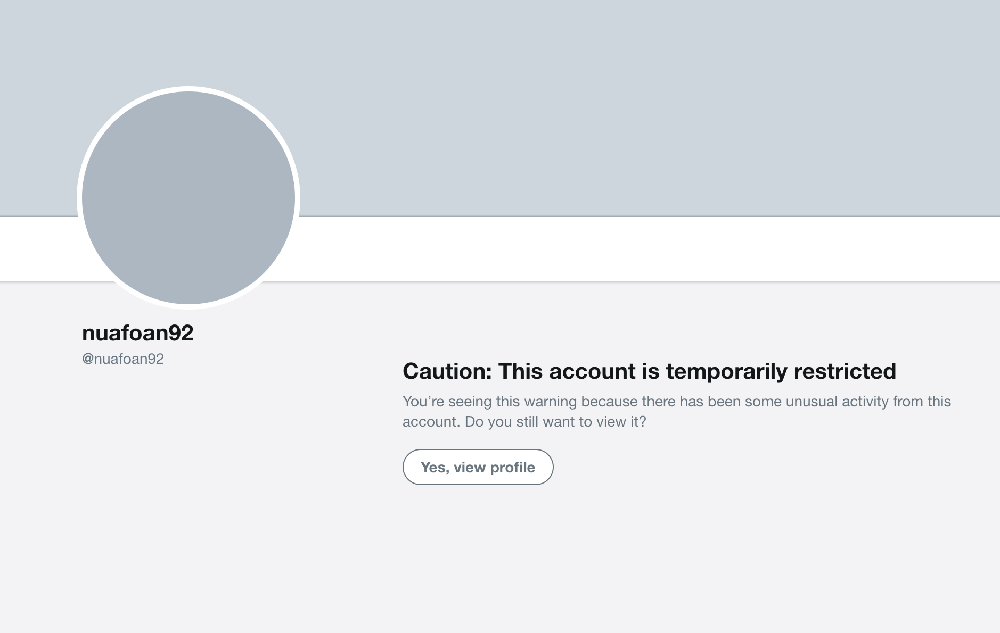
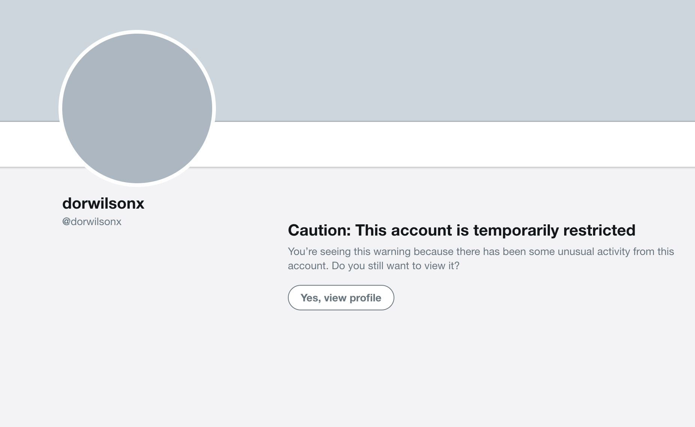
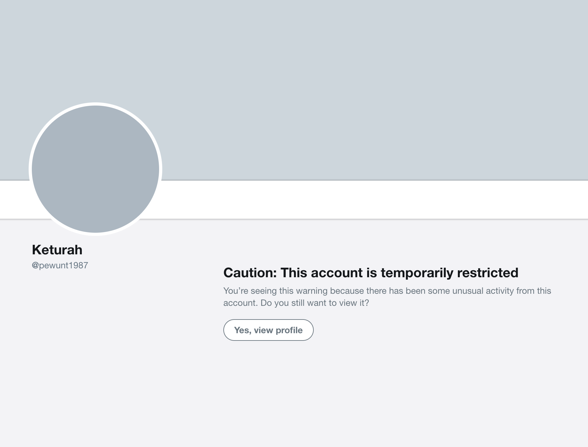
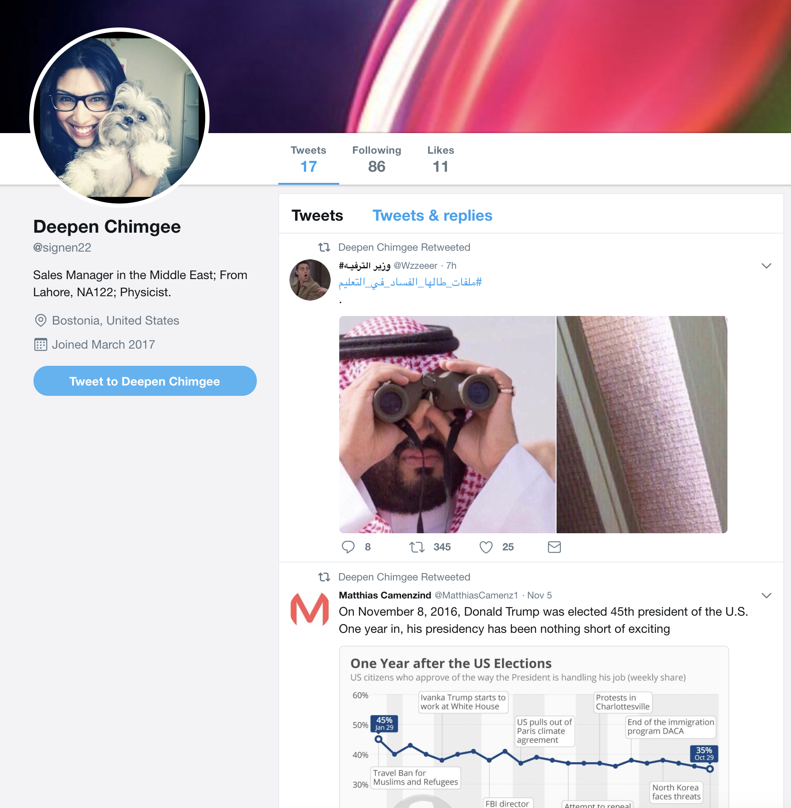
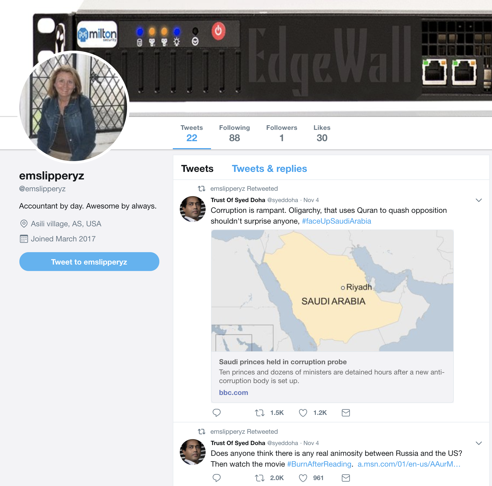

Bots and the 2016 election
Despite what we now know about the Kremlin’s coordinated efforts on social media during the 2016 election, it’s still not hard to find digital traces—or even the actual profiles—of accounts spreading eggregious examples of misinformation. In the tweet below, for example, I included a screen shot of obviously pro-Trump bot accounts—which mysteriously stopped tweeting on Nov. 2nd 2016th—that I reverse engineered by identifying accounts that had pushed a well-documented lie about Trump being endorsed by the Pope.
All of these accounts…
— Mike Kearney📊 (@kearneymw) October 5, 2017
-Were created before 2015
-Tweeted > 10k times
-Mentioned Pope endorsing Trump
-Stopped tweeting on 11/2/2016
🤔
🤔
🤔 pic.twitter.com/a9wyJGgSCo
A lot of the accounts that were active during the 2016 election have since been inactive, deleted, or even shut down by Twitter, so it’s tempting to assume the problem is at least somewhat under control. However, based on my experience looking through large amounts of political Twitter data, I’d say the suspiciously partisan bots continue to operate on a large scale. To give you an example of what I’m talking about, I’ll walk you through something I encountered today.
Manafort love?
So for the past week I’ve been collecting data about the Mueller investigation. I gathered every public tweet that mentioned Mueller, Gates, Manafort, or Papadolpous. Here’s the frequency of each in the final data set:

Notice the weird spike in Manafort mentions? Because, for the most part, media coverage still drives Twitter activity, my first thought was that the spike was in response to a specific article or a new piece of information—maybe something related to Manafort’s house arrest. However, a spike in mentions, without a more noticeable residual tail, still seemed odd and probably not related to something that happened in the news media. So, I looked closer at the data and discovered the spike was due to a very sudden rush to retweet the following status:
#Innocent until PROVEN guilty. My heart goes out to #Manafort family - especially for the attorney daughter - please don't change your name
— Trust Of Syed Doha (@syeddoha) November 2, 2017
And here’s a screen shot of the tweet in case it ever gets deleted:

So I guess the spike can be explained by a fairly popular account tweeting about the presumed innocence of Paul Manafort?
But given the nature of his recent indictment, isn’t it a little hard to believe that anyone was really excited and ready to retweet a status so obviously supportive of Manafort?
Well I couldn’t beleive it. So, next, I looked at a list of all the retweeters. I quickly noticed a few flags that led me to believe this was a coordinated effort on the part of hundreds of partisan bots.
Flags of suspicious partisan bots
1. The retweets came in clusters
The timing of the retweets came in clusters. A few hundred retweets, for example, occurred within only a few couple of minutes in time. It’s not necessarily uncommon to see hundreds of retweets within a few minutes, but typically that pace doesn’t just come and go so easily.
2. The accounts had very few followers
The clustered retweeters followed on average about 100 Twitter accounts. The average number of accounts following them, however, was 0.6. In other words, the average retweeter followed 100 accounts but only followed by 1 account.
Given the lack of followers of these accounts, then, it’s a bit odd to see hundreds of accounts retweet the same tweet—that happens to be bizarrely pro-Manafort—especially since the actual retweets HAD NO AUDIENCE.
3. The accounts were created in clusters
When I looked at the accounts that were retweeting this pro-Manafort status in unison, I found that most were created within the span of one hour of many of the other accounts. Again, this occurred in clusters. During approximately four different hour-long intervals, at least 100 of the accounts happened to be created.
4. Twitter already restricted several of them
The final flag that gave away these suspiciously partisan bot accounts can be seen when opening many of the specific accounts in a web browser. Among first five accounts I opened in my browser, for instance, , I found that three had already been deleted by Twitter



while the other two were still alive and active.


So not only did these accounts already influence the traffic and sentiment around Paul Manafort’s indictment, but many continue to do so via promotion of pro-Trump and/or pro-Kremlin messages!